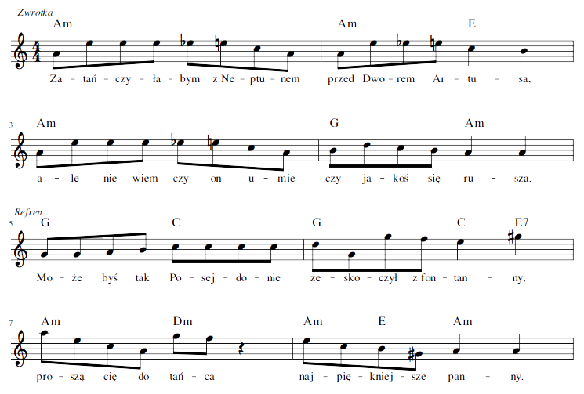

Zatańczyłabym z Neptunem
przed Dworem Artusa,
ale nie wiem, czy on umie,
czy jakoś się rusza.
Może byś tak Posejdonie
zeskoczył z fontanny,
proszą cię do tańca
najpiękniejsze panny.
Zatańczyłabym z Neptunem
i na Ołowiance,
ale nie wiem, czy on umie,
czy ma chęć na tańce.
Może byś tak Posejdonie
zeskoczył z fontanny,
proszą cię do tańca
najpiękniejsze panny.
Zatańczyłabym z Neptunem
pod tą Złotą Bramą,
ale nie wiem, czy on umie,
zostawi mnie samą.
Może byś tak Posejdonie
zeskoczył z fontanny,
proszą cię do tańca
najpiękniejsze panny.
Zatańczyłabym z Neptunem
na Stogach na plaży,
ale nie wiem, czy on umie,
i czy się odważy.
Chyba nie chcesz Posejdonie
zeskoczyć z fontanny,
popatrz, poszły sobie
najpiękniejsze panny.
|
 melodia: Marcin Witosławski |